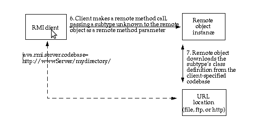

TP RMI
- chargement dynamique de code
Daniel Hagimont
Daniel.Hagimont@enseeiht.fr
Vous devez reprendre l'application RMI du Carnet faite au TP précédent et vous séparez les classes dans deux répertoires :
Dans le
répertoire client :
Ainsi, on a le strict nécessaire pour l'exécution de
l'application client. Elle peut notamment fonctionner avec
différentes implantation de Carnet ou différentes implantations
de RFiche.
Dans le répertoire serveur :
Si vous lancez l'application avec ce découpage, vous allez
obtenir une erreur (faite le).
La classe SFicheImpl est disponible coté client, une instance
est créée coté client, puis passée en paramètre au serveur
(CarnetImpl), mais coté serveur, on ne connait pas cette classe
SFicheImpl.
La solution à mettre en oeuvre a
été présentée en cours. Elle consiste à lancer un serveur Web
qui rend téléchargeables les classes de l'application que l'on
veut partager. On vous donne un petit serveur Web en Java
(Comanche). Vous devez mettre dans ce serveur Web la
classe SFicheImpl.class qui manque à votre serveur.
N'hésitez pas à vous documenter
sur le web ....

Tips
- il faut regarder les options suivantes :
- propriété
-Djava.security.policy=./java.policy
- utilisation d'un SecurityManager
(System.setSecurityManager(new SecurityManager());)
- propriété
-Djava.rmi.server.useCodebaseOnly=false
- propriété
-Djava.rmi.server.codebase=http://localhost:8080/